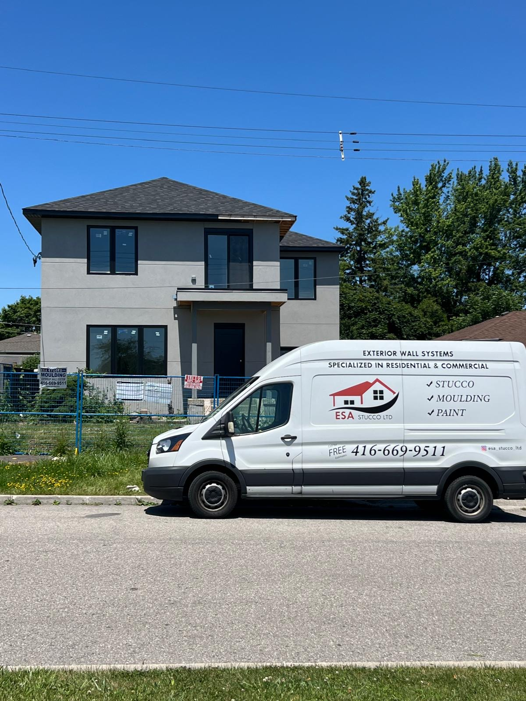
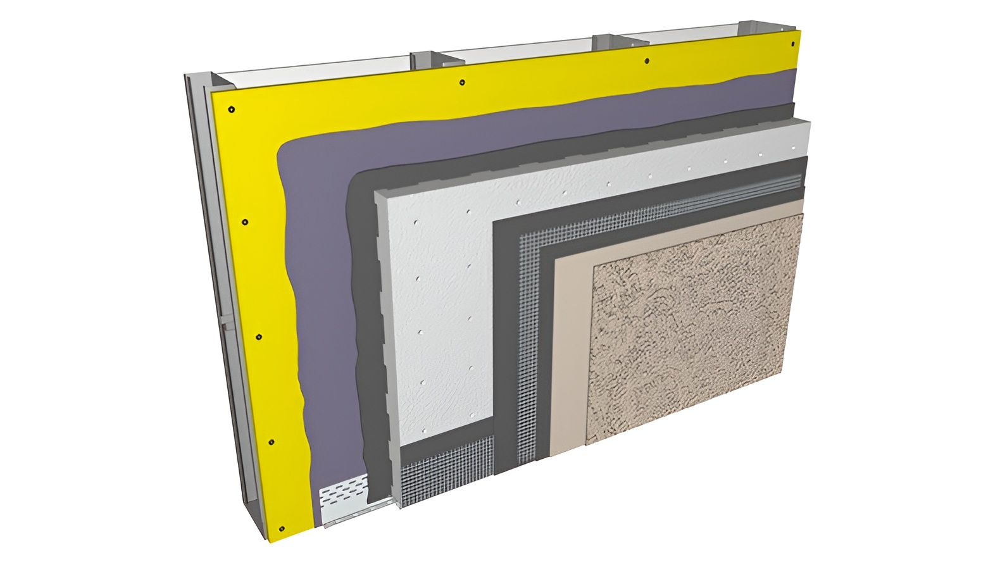

Durability
Properly installed stucco can handle harsh Canadian weather conditions and provide years of dependable performance.
Your exterior does more than just look good. This guide explains what EIFS stucco is, why proper installation matters, and what homeowners should know before choosing a contractor.

EIFS, or Exterior Insulation and Finish System, is a multi-layer exterior cladding system that combines insulation, reinforcement, and a protective finish. When installed correctly, it provides a clean, modern appearance along with strong energy performance and long-term durability.

Properly installed stucco can handle harsh Canadian weather conditions and provide years of dependable performance.
Stucco is easy to maintain and offers long-term value with less upkeep than many other finishes.
Clean lines, custom textures, and a refined look that suits many homes and commercial buildings.
When used as part of a proper system, EIFS helps improve insulation and can support better energy performance.
With the right assembly and components, wall systems can contribute to improved fire performance and protection.
High-quality installation improves curb appeal and protects the building envelope for the long run.
Creates the structural base and stable backing for the assembly.
Adds moisture management and protects the wall structure from water intrusion.
Provides reinforcement, crack resistance, and a strong bond within the system.
Helps create proper adhesion and a more even, consistent finish layer.
The final protective layer that delivers colour, texture, and finished appearance.